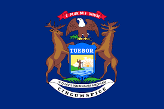

Michigan is the 26th state to join the Union, in 1837.
The state has a total population of 10,077,331 people as of the 2020
census.
The state is known for its beauitful nature and the Great Lakes.
Michigan is the 26th state to join the Union, in 1837.
The state has a total population of 10,077,331 people as of the 2020
census.
The state is known for its beauitful nature and the Great Lakes.
| City Name | Population | Incorporated | Classification | Region | Average Income |
|---|---|---|---|---|---|
| Lansing | 112,644 | 1859 | Urban | Central | $34,833 |
| Detroit | 639,111 | 1806 | Urban | Eastern | $30,894 |
| Kalamazoo | 73,598 | 1843 | Suburb | Western | $31,189 |
